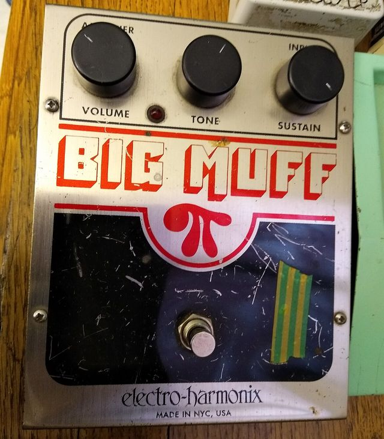

Scheda 085 · 1969 · New York
Electro-Harmonix Big Muff
Negli anni '90 lo costruisce una fabbrica militare russa, e salva la ditta che l'aveva inventato
Un distorsore a pedale di New York, 4 transistor e 3 manopole, che dal 1969 allunga le note della chitarra.
Il suono vero · 0:45
Un Little Big Muff vero, la versione piccola che Electro-Harmonix fa dal 2006 con lo stesso circuito, su una Squier Stratocaster.
0:00 / 0:45
Registrazione di David Monniaux · CC BY-SA 3.0 · Wikimedia Commons · estratto di 45 s, volume normalizzato
- USCITA
- 1969
- TRANSISTOR
- 4
- MANOPOLE
- 3
- IN RUSSIA
- Anni '90
La macchinaChe cos'è
È una scatola di metallo con 3 manopole, Volume, Tone e Sustain, e un interruttore da schiacciare col piede. Quello della foto ha la scritta MADE IN NYC, quindi è uno di quelli rifatti a New York dal 2000 in poi. Electro-Harmonix non lo chiama fuzz, lo chiama distorsore e «sustainer», e secondo me ha ragione lei. Il bello non è lo sfrigolio, è la nota che resta. In più di 50 anni è cambiato spesso, col triangolo, con la testa d'ariete, con l'amplificatore operazionale, verde militare. E i chitarristi ne parlano come del vino, per annata.
Chi l'ha costruitaMike Matthews, Electro-Harmonix
Mike Matthews comincia rimarchiando un fuzz altrui, il Fuzzrite della Mosrite, che per la Guild diventa Foxey Lady. Ci guadagna, e nel 1968 a New York fonda Electro-Harmonix. All'inizio del 1969 esce il Muff Fuzz, con 2 transistor. Verso la fine dell'anno arriva il Big Muff Pi, che ne ha 4 e le manopole messe a triangolo. Negli anni '80 la ditta fallisce, e Matthews si mette a vendere valvole fatte in Russia, col marchio Sovtek. Sull'anno in cui il Big Muff russo comincia le fonti non concordano, il 1992 o il 1993. Nel 2000 la produzione torna a New York.
Come funzionaCosa c'è dentro
Dentro ci sono 4 transistor in fila, e ognuno lavora sul segnale del precedente. Sustain decide quanto forte entra la chitarra, e più entra forte più la nota esce schiacciata e squadrata. Tone sposta il suono dai bassi pieni agli acuti che tagliano. Il bello è un effetto collaterale. Con tutta quella saturazione la nota, invece di spegnersi piano, resta quasi allo stesso volume mentre la corda si ferma. Le versioni russe hanno ancora più bassi, e infatti le cercano anche i bassisti. Provate Sustain al massimo, Tone a metà e una nota sola, lunga.
Chi l'ha usataNei dischi
- David Gilmour (Pink Floyd)il suo preferito è il Ram's Head, quello con la testa d'ariete degli anni '70
- Billy Corgan (Smashing Pumpkins)la versione con l'amplificatore operazionale su «Siamese Dream» (1993)
- Mudhoneyl'EP del 1988 si chiama «Superfuzz Bigmuff», dai 2 pedali che usavano
L'aneddotoUna storia
Matthews racconta che il primo negozio a prendere i Big Muff è Manny's, a New York, e che Jimi Hendrix ne compra uno dei primi. Poco dopo Hendrix lo invita a una sessione, e sul pavimento dello studio c'è proprio quel pedale. Matthews colloca la scena nel 1970, l'anno in cui Hendrix muore. Nel 1971 gli arriva un ordine per posta da Carlos Santana, con l'assegno e la carta intestata. Un disco di Hendrix col Big Muff, però, non l'ha mai trovato nessuno. Kit Rae, che sui Big Muff ha messo insieme un archivio, scrive che non se ne conosce nemmeno uno.
Avvertenze
Il Big Muff tiene la nota anche quando non la volete più. Prima di cambiare accordo, fermate le corde con la mano.
Il carosello · si aprono in grande
Le 6 tavole
Da dove viene
Fonti
- «Classic gear: the enduring legacy of the Electro-Harmonix Big Muff Pi», Rod Brakes — Guitar World verificata il 2026-11-06
- «Big Muff» — Wikipedia (EN) verificata il 2026-11-06
- «Big Muff Users and Their Pedal Boards» — Kit Rae verificata il 2026-11-06
- Green Russian Big Muff, Chris Gill — Guitar World, 30/11/2017 verificata il 2026-11-06
- «Electro-Harmonix Ram's Head Big Muff Review» — Premier Guitar verificata il 2026-11-06
- «Little Big Muff Pi» — Electro-Harmonix verificata il 2026-11-06
- «Sovtek» — Wikipedia (EN) verificata il 2026-11-06
- Op-Amp Big Muff Pi e «Siamese Dream», Michael Astley-Brown — MusicRadar verificata il 2026-11-06
- «Superfuzz Bigmuff» — Wikipedia (EN) verificata il 2026-11-06
Foto: Skimel · CC BY-SA 4.0 · Wikimedia Commons
Foto nelle tavole: Sky99 · CC BY-SA 3.0 · Wikimedia Commons
Suono: Registrazione di David Monniaux · CC BY-SA 3.0 · Wikimedia Commons · estratto di 45 s, volume normalizzato